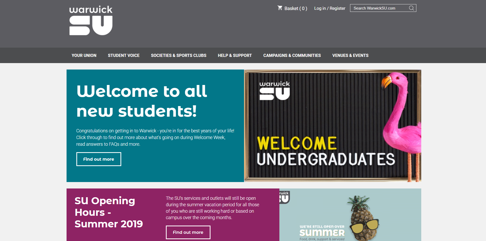

Warwick Students' Union Website
DateJuly 2019 - August 2019
RoleWebsite Content Assurance Executive and Web Developer
TechnologiesHTML, CSS, Javascript, PHP
DescriptionThe original Warwick Students' Union website was identified to be suboptimal in meeting the needs of the users, as well as having many accessibility and design issues. I was responsible for ensuring that the newly designed website met the needs of all users before it went live and coding unfinished pages. The website was successfully launched in August 2019.

Further Notes
Features
- Redesigned website that is responsive to mobile devices
- Key accessibility issues fixed
- Broken links removed or changed to improve user browsing experience
- PHP web scraper rebuilt for SU newsletters
- Website pages and menu restructured to simplify website navigation
Questions
My main responsibility in the development of the website was as the Website Content Assurance Executive; through this role I had the responsibility of ensuring the pages and the functionality of the website were all correct before the new design went live. I also had secondary responsibilities for coding many of the pages on the site using HTML, CSS, and Javascript.
Along with the technical responsibilities, I also had extra responsibilities to contribute to meetings - as discussed in my job review. The most important part of this included leading training sessions for staff who wanted to get used to the new system.
My technical skills with HTML, CSS, Javascript, and PHP were improved during this job, as well as with content management systems and version control software. Along with this, I believe I have become better at contributing to work meetings through my experiences in leading training sessions.
One of the accessibility issues addressed was font size. While there is no official minimum font size, it is recommended that text should be at least 16px. Another issue was alternate text for non-text elements. Hundreds of images without alternate text were identified and altered to contain alternate text. Many other assessibility issues were also addressed.